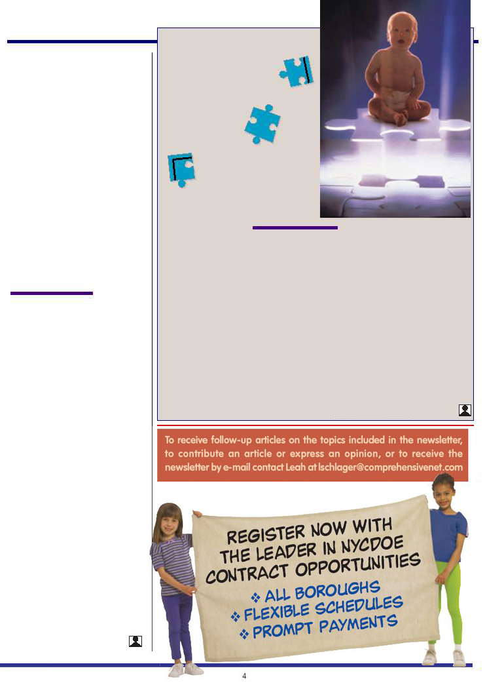

4
To receive follow-up articles on the topics included in the newsletter,
to contribute an article or express an opinion, or to receive the
newsletter by e-mail contact Leah at lschlager@comprehensivenet.com
UPDATE: ONE
MORE PIECE
OF THE PUZZLE
Leah Schlager
The controversy regarding
the apparent rise of autism is
still being debated. (Experts
now suspect that one person
in 160 lives with some degree
of autism. That’s three to four
times the rate estimated in the 1970’s.) The
question persists—are
the numbers of cases ris-
ing or are parents more
aware and doctors more
adept at diagnosing the
disorder?
Previous studies had
revealed that a large percentage of children
diagnosed with autism have abnormally
large brains for their age. A recent study,
published in The Journal of the American
Medical Association, found that children di-
agnosed with the autism disorder were born
with smaller than average heads which grew
from the 25th percentile to the 84th per-
centile in the first year. This disproportion-
ately rapid growth appears to be an early
predictor of the disorder that may not be
manifest until the child is two or three
An autistic child may have
an adult-size brain by the
age of four or five.
years old. And al-
though the growth
rate slows significantly
after the first year, an
autistic child may have
an adult-size brain by
the age of four or five.
These findings still do not reveal much
about the causes of the disorder, nor do
they offer possible treatments. However,
they do suggest that the disorder is devel-
opmental and can be traced back to infancy
and not a sudden onset due to environ-
mental stimuli or vaccines — as had been
previously suspected.
(Newsweek, “Predicting Autism,” July 28, 2003)
To read “Putting The Pieces Together: Understanding
Autism”and “Autism: A Mother’s Story,” log on to
www.comprehensivenet.com/newsletter.html
BULLYING…Cont. from Page 3
instance, a child might resist going to
school and feign headaches or stom-
ach aches. Parents and teachers may
notice a child becoming withdrawn,
cling, experience changes in sleep or
appetite. Some children will have dif-
ficulty concentrating or become non-
communicative. Some blatant signs
such as clothing that is repeatedly dam-
aged or “lost” or unexplained bruises
and cuts are also often missed signs.
Because no one deserves to be bul-
lied, schools need to have strategies in
place to provide the safest school en-
vironment possible. Anti-bullying
strategies seem to work best when
there is collaborative effort between
the teachers, parents, and students.
An important first step is to create an
anti-bullying policy and specific rules
against aggressive and harmful behav-
Because no one deserves to
be bullied, schools need to
have strategies in place to
provide the safest school
environment possible.
iors with specific consequences set up
for those students who break the rules.
In New York City, 13 more schools
have been added to the list of “danger-
ous schools,” and a proposed revision
to the disciplinary code includes a new
category that specifically makes bully-
ing, stalking and threatening punish-
able offenses. In February, Mayor
Bloomberg added 150 police person-
nel to the 12 most violent New York
City schools.
Creating an anti-bullying school cul-
ture demonstrates a commitment to the
prevention of bullying and makes a po-
tential victim feel less alone in his pre-
dicament. Conflict-resolution skills, role
playing and class discussions are essen-
tial to sensitizing children to feel the
pain and isolation of the victim and to
providing victims with skills and pos-
sible solutions — thereby possibly pre-
venting a minor accident from escalating
into full scale harassment and eventu-
ally tragedy.